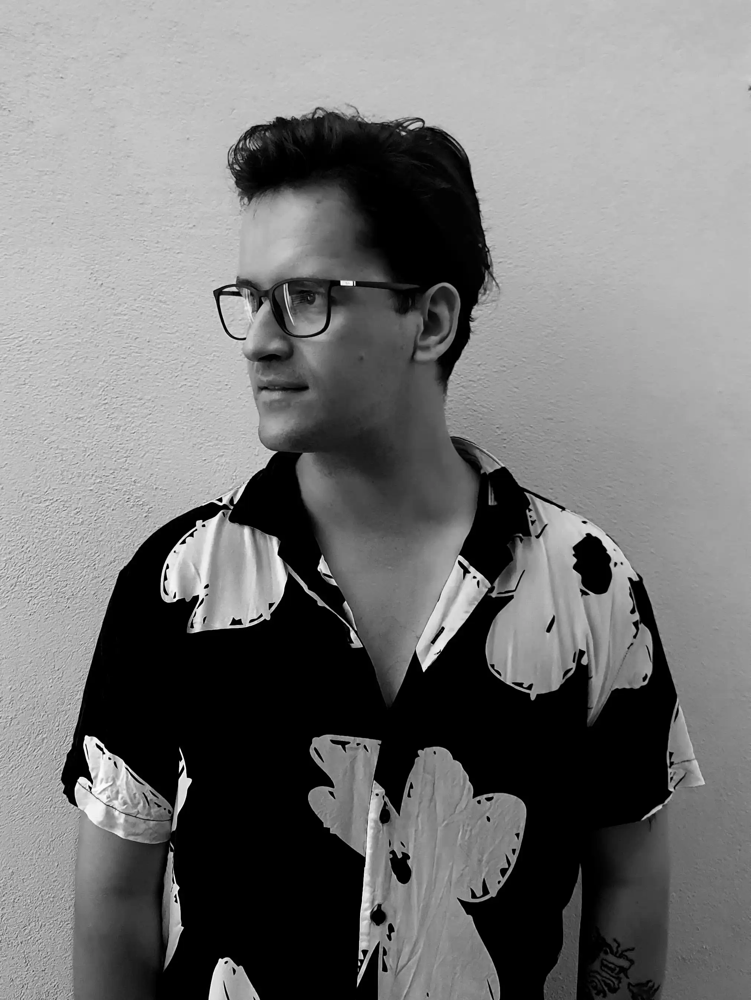

ABOUT ME
A graphic designer specializing in brand identity and visual communication. My work focuses on creating coherent, aesthetically pleasing, and functional systems. During my studies at the University of Pécs, I gained extensive design experience, including visual identity, typography, editorial and digital design, animation, and 3D design. I am particularly interested in projects that utilize the visual form of cross-linguistic communication one that helps interpret the environment and where I can apply design tools to solve problems.
PROFESSIONAL EXPERIENCE
2026 – RGB Pro
Professional Jury Member, Creative Design Award
2024– – University of Pécs
Development and implementation of the university's new visual identity, design of print and digital communication materials, publications, and institutional brand applications.
2023– – City of Pécs
Renewal of Pécs's visual identity, development of the visual identity system and its applications, as well as design of print and digital communication materials.
2023 – Fermáta – Interactive Concert Hall
Development of the visual identity and creation of related animated illustrations.
2022 – Kistehén Band
Event visuals and social media content.
2017–2018 – Gorsium High School and Art High School
Part-time Lecturer in Graphic Design
2016–2017 – MagICS Ltd.
Digital Printing Operator
2016 – LoveInfo
Graphic design for the development of a sexual education application.
SELECTED EXHIBITIONS
2026
25th Graphic Design Biennial – Hungarian University of Fine Arts, Budapest
Arany Rajzszög – Pesti Vigadó, Budapest
2024
24th Graphic Design Biennial – Hungarian University of Fine Arts, Budapest
Diploma Exhibition – Csontváry Museum, Pécs
2023
Pécs Arca (Pécs City Visual Identity) – I Love Pécs Café, Pécs
Arany Rajzszög – Moholy-Nagy University of Art and Design, Budapest
Posters From Around the World – m21 Gallery, Pécs
"Ablakok" – Senta, Serbia
EGYSZERTÍZ – Nádor Gallery, Pécs & FUGA Architecture Center, Budapest
2021
Ampersand - International Logo Exhibition – Budapest, Hungary
"Ajtók" – Senta, Serbia
PROFESSIONAL AWARDS
2025
RGB Creative Design Black Award - Grand Prize – University of Pécs Visual Identity
RGB Creative Design Red Award – University of Pécs Visual Identity
Los Angeles Short Film Awards – Angel-maker short film
2024
Arany Rajzszög Award – Pécs City Visual Identity
City Marketing Diamond Award – Pécs City Visual Identity
SELECTED PROFESSIONAL PUBLICATIONS
"Thoughtfulness down to the smallest detail is very important" – Interview, Kreatív Magazine, online publication.
8th ArtHungry Award Catalogue – ISBN 978-615-02-2926-3, 2025
PTE Grafika – ISBN 978-963-626-415-4, 2025
Posters from around the world – ISBN 978-615-5873-07-2, 2023
Art and Monument Protection in Senta, 2011-2021 – ISBN 978-86-80644-54-7, 2022
36th National Scientific Students' Associations Conference, Arts and Art Theory Section – Ruslan and Ludmilla - Animated Artwork